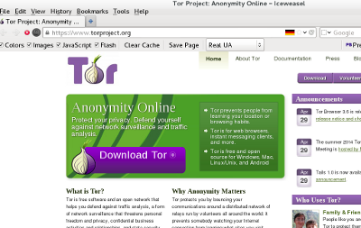

Navigation
Submitting Tips
-
Go to https://torproject.org
Click on download tor.
 - The website will attempt to direct you to the proper version of torbrowser for your computer. If it does not guess correctly - click on view all downloads.
-
Follow the instructions for the operating system your computer is running and
start the tor browser. If all has gone properly you will see something like
the following.
-


- Once you have connected to tor, go to the VTLeaks submission URL at nkyve6t26ecxas7j.onion. You will only be able to view and use this site using the tor browser or directly through the tor network.
- The process of submitting and viewing tips is described in the following set of screenshots.
- Choose your reciever. This is the entity that is to recieve your submission.
-

-

-